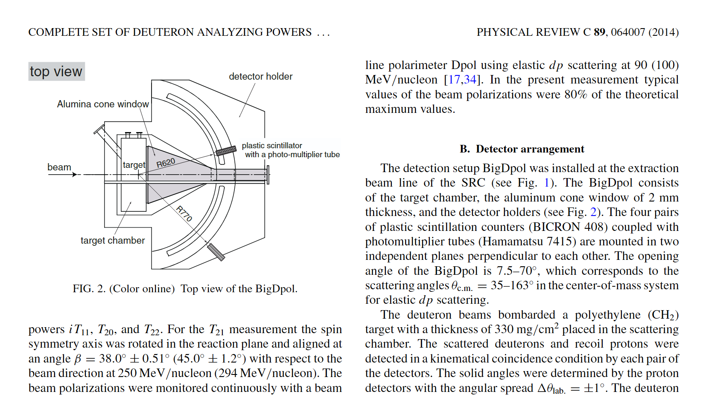

其他研究组的 polarimeter
本页只记录与当前课题最相关、且能检索到公开来源的 polarimeter / 相关极化探测系统。优先收录 hadron / deuteron / proton / neutron 方向。若某些硬件细节在公开一手来源中无法稳定确认，我会明确写成“待核实”，而不把它当成既定事实。
RIKEN RIBF#
dPol#
- 角色：IRC bypass beam transport line 上的 beam-line polarimeter，用于 polarized deuteron beam 在进入 SRC 前的偏振监测。
- 反应：公开会议材料一致写为 d-p elastic scattering；2017 的 layout slides 直接给出 90 MeV/nucleon。
- 能稳定确认的公开信息主要来自 accelerator / experiment layout slides；目前我没有检索到像 BigDpol 那样详细的公开 detector note。
- 待核实：一些二手资料把 H1161 / H1161GS 归给 dPol，但我暂时没有找到足够稳定的一手公开页面，因此这里不把它写成确定事实。
资源#
- Overview of RIKEN RIBF Facility (Sakurai, 2009)
- Plan of measurement of dp scattering at RIBF, RIKEN Accel. Prog. Rep. 42 (2009)
- Deuteron Analyzing Powers (Sekiguchi slides)
- Acceleration of Polarized Deuteron Beams with RIBF Cyclotrons (Cyclotrons'16)
BigDpol#

- 角色：安装在 SRC extraction beam line 上，用于 190-300 MeV/nucleon 区间的 d-p elastic scattering 极化测量。
- RIKEN Accel. Prog. Rep. 42 里给出的 detector note 是目前最清楚的公开说明：BigDpol 由 target chamber、2 mm alumina cone window，以及四对对称布置的 plastic scintillators 组成。
- 闪烁体：BC408。
- PMT：Hamamatsu H7415。
- 几何：散射 deuteron 与 recoil proton 在 left / right / up / down 四个方位做 kinematical coincidence；开角约 10°-70°。图中可见约
R620和R770的半径标注，可作为 deuteron / proton 臂距离的示意值。 - 靶：polyethylene (CH2)。
资源#
- Plan of measurement of dp scattering at RIBF, RIKEN Accel. Prog. Rep. 42 (2009)
- Complete set of deuteron analyzing powers for dp elastic scattering at 250 MeV/nucleon and three nucleon forces
- Acceleration of Polarized Deuteron Beams with RIBF Cyclotrons (Cyclotrons'16)
- Hamamatsu H7415 product page
KuJyaku#
- 目标：为 polarized proton target 条件下的 d-p elastic scattering / spin-correlation 测量而开发，覆盖 100 MeV/n 和 135 MeV/n 的 cross-section minimum 区域。
- 方位：围绕束轴布置在 0°, 90°, 180°, 270° 四个 azimuthal sectors。
- 磁场：与 triplet-DNP polarized proton target 一起工作，公开 thesis 给出的典型外场约 0.4 T。
- 公开 thesis 给出的典型 plastic detectors 如下：
| detector | scintillator | size (mm^3) | PMT | distance from target (mm) |
|---|---|---|---|---|
| Pl_p | BC-408 | 70×70×25 | H7195 | 1000 |
| Pl_d | BC-408 | 250×70×10 | H7195 | 950 |
资源#
- Developments Toward the Measurement of Spin Correlation Coefficients in d-p Elastic Scattering (Tohoku thesis PDF)
- Few-Nucleon Scattering Experiments to Explore the Three-Nucleon Forces (PoS, CD2024)
- Hamamatsu H7195 product page
JINR / Nuclotron / DSS#
- DSS (Deuteron Spin Structure) 是 Nuclotron / NICA spin programme 的核心内部靶实验之一，用 polarized deuteron / proton beams 研究自旋相关 observables。
- 早期 Nuclotron ITS polarimeter 的公开构型较清楚：基于 backward-angle d-p elastic scattering，construction note 给出的早期 proton / deuteron plastic counters 分别约为 14×20×20 mm^3 与 20×20×20 mm^3，离靶约 60 cm。
- 后续 DSS 文献与会议材料中，常见实现是多组 plastic scintillators 加 PMT 的 segmented setup；若只关心当前 DSS 读出，H7416MOD 在几篇会议材料里反复出现。
- 近年的升级方向之一是把部分 plastic-counter readout 从 PMT 扩展到 SiPM。
资源#
- Development of deuteron polarimeter at internal target station of Nuclotron
- Construction of Deuteron Polarimeter at Internal Target Station of Nuclotron (CNS annual report)
- DSS related dp elastic-scattering data summary (arXiv:1005.0525)
- Plastic scintillators + H7416MOD conference paper (EPJ Web of Conferences)
- SiPM upgrade study for DSS counters
- NICA newsletter note mentioning DSS polarimetry (No. 15, 2025)
Forschungszentrum Julich / COSY#
EDDA#
- EDDA 是 COSY 早期最重要的 hodoscope 之一，最初服务于 pp elastic scattering 的激发函数和 spin observables 测量。
- 在 JEDI / EDM programme 前后相当长的一段时间里，EDDA 的 plastic scintillator system 一直被当作 beam polarimeter 使用。
- 对当前主题的意义：它是 COSY 上后续 JEDI / JePo polarimetry 的直接前身。
资源#
- JEDI Polarimeter (JePo) installed in COSY (JARA / Julich)
- Older COSY polarimetry / EDDA conference paper
- COSY / EDDA overview note
JEDI polarimeter / JePo#
- JePo 是为 EDM search 新设计的 dedicated beam polarimeter，直接替代 EDDA。
- JARA 的公开介绍给出的核心构型：基于 LYSO modules 的 modular calorimetric polarimeter，单模块约 3×3×8 cm^3，耦合 large-area SiPM arrays。
- 探测器呈 radial symmetry，针对 up-down / left-right asymmetry measurement 做了几何优化。
- JINST 主论文给出的完整系统：52 个 LYSO modules，位于四个对称 blocks（上、下、左、右）中；LYSO 前面加 plastic scintillators 做 dE/dx particle identification。
- 主应用场景：COSY ring 内 proton / deuteron EDM search 的高稳定度长时极化监测。
资源#
- JEDI Polarimeter (JePo) installed in COSY (JARA / Julich)
- A new beam polarimeter at COSY to search for electric dipole moments of charged particles (GSI repository)
- JINST paper DOI: 10.1088/1748-0221/15/12/P12005
Jefferson Lab (cross-domain reference)#
这一节保留是为了做 cross-check：JLab 的电子束 polarimetry 与 hadron polarimetry 不同，但其 beamline instrumentation 文档极其完整，适合对比“专用 polarimeter”与“相关 detector”的边界。
Hall A Moller polarimeter#
- 目标：测量 longitudinal electron-beam polarization。
- 原理：electron beam 打到 magnetically saturated thin iron foil，上、下游谱仪选择 Moller 电子对并计 coincidence。
- Hall A manual 明确写到：target magnet 约 3 T，探测的是
75° < theta_CM < 105°范围内的 electron pairs。
资源#
BigHAND#
- BigHAND 是 large-area neutron detector，不是 dedicated beam polarimeter。
- 我把它保留在这里，仅作为“polarized-neutron / Hall A experiment 中常被一起提到的相关硬件”示例。
- 公开资料显示它由多层 steel + thick plastic scintillator bars 组成，用于 neutron detection 与 TOF discrimination。
资源#
Other relevant hadron polarimeters#
NPOL3 (RCNP, Osaka)#
- NPOL3 是 high-resolution neutron polarimeter，用于 polarization-transfer observables measurement。
- NIMA 论文描述的标准构型：
- 前两层：20 组 one-dimensional position-sensitive plastic scintillators，每条约 100×10×5 cm^3，覆盖 100×100 cm^2；
- 最后一层：100×100×10 cm^3 的 two-dimensional position-sensitive liquid scintillator，用于 double-scattered neutron / recoil-proton detection。
- 典型 neutron energy 约 200 MeV，文中给出的典型 energy resolution 约 300 keV。
- 对当前页的意义：它不是 deuteron beam polarimeter，但它是非常典型的 hadron polarimetry / polarimeter-optimization 参考。
资源#
- Performance of the neutron polarimeter NPOL3 for high resolution measurements
- Tohoku summary page for the NPOL3 paper
SiPM / PMT quick comparison#
下面这段只保留和 polarimeter 选型最相关的几点，不再展开成完整器件综述。
| item | PMT | SiPM | practical note |
|---|---|---|---|
| gain | typically 106-107 | typically 105-107 | 两者都可做到单光子级放大 |
| active area | 单通道可做得很大 | 单颗面积较小，常靠阵列拼接 | 大面积覆盖时 PMT 仍有优势 |
| magnetic-field tolerance | sensitive | essentially immune | 强磁场或紧凑布局时 SiPM 更有优势 |
| operating voltage | high voltage, typically kV | low voltage, typically tens of V | SiPM 电源和安全性更友好 |
| dark noise | generally lower per unit area | room-temperature DCR higher | SiPM 常需温控 / 校正 |
| timing | ns class; MCP-PMT can be much better | tens to hundreds of ps possible | 两者都能做好 TOF，但路线不同 |
- 如果实验空间大、磁场小、想要大面积单通道覆盖，PMT 仍然直接。
- 如果实验空间紧、存在磁场、希望低电压和高度分段读出，SiPM 更自然。
- JePo 采用 SiPM，而 BigDpol / KuJyaku / 传统 DSS 方案多采用 plastic scintillator + PMT，这个演化路径本身就很有代表性。
参考资料#
- SiPM review (Phys. Med. Biol.)
- SiPM overview in PET instrumentation review (PMC)
- Hamamatsu H7415
- Hamamatsu H7195
- SiPM saturation / linearity discussion (Sensors)
最后更新:
2026-03-18
创建日期: 2025-06-04
创建日期: 2025-06-04